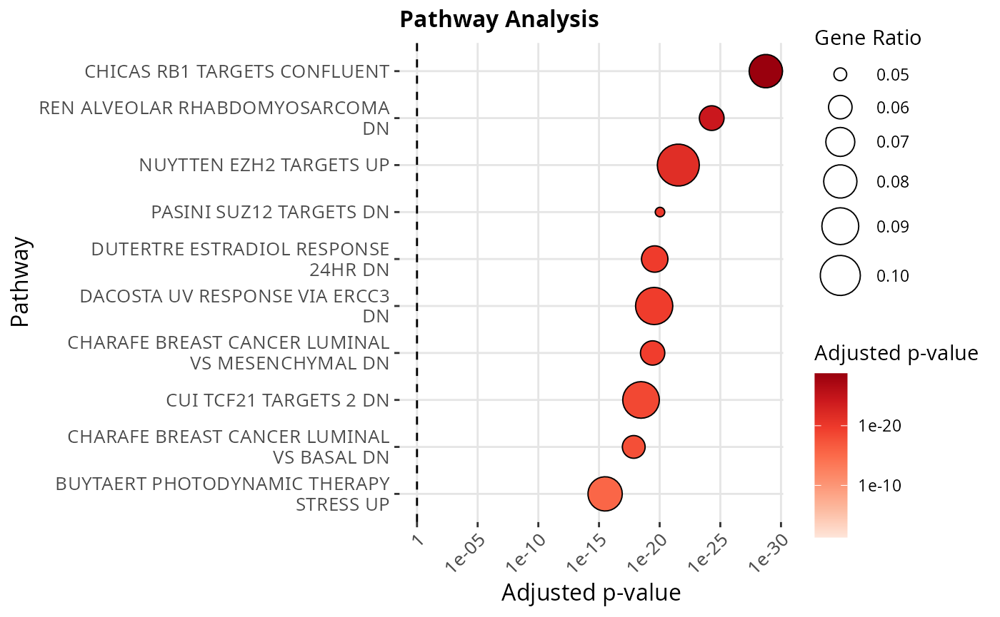
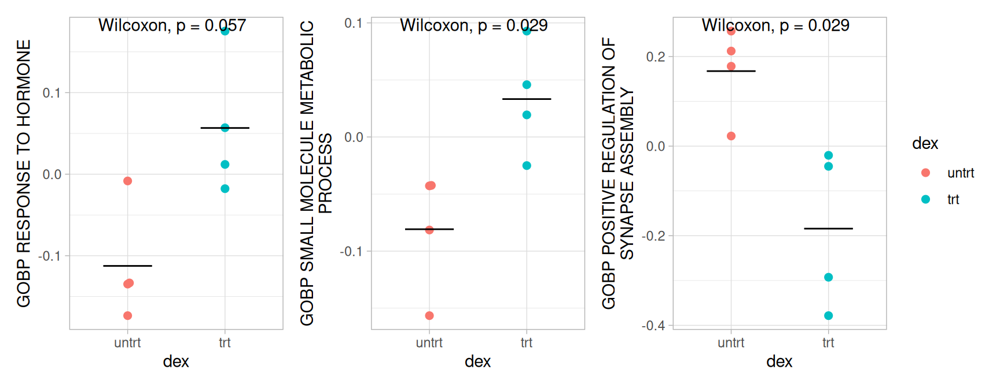
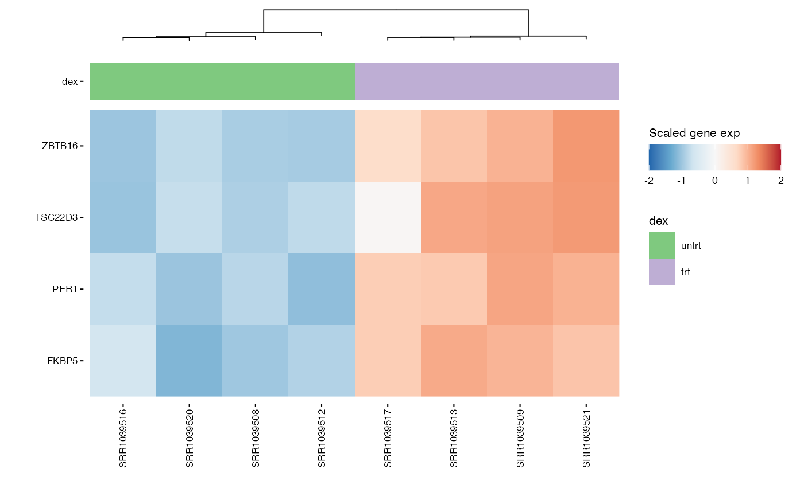

Unsupervised RNA-seq analysis
Cordeliers Artificial Intelligence and Bioinformatics
Source:vignettes/sup_rnaseq.Rmd
sup_rnaseq.Rmd
For the supervised and unsupervised analyses, we are using an open
dataset which is given by the airway package. It provides a
gene expression dataset derived from human bronchial epithelial
cells, treated or not with dexamethasone (a
corticosteroid).
Here is an example of how the supervised part of the
CAIBIrnaseq package can be use. If you want to use this
notebook for your projects, it is available here
First, we need to import the required packages :
library(airway) # dataset's package
library(SummarizedExperiment) # Object's type we are using
# library(CAIBIrnaseq) # package
devtools::load_all()Before analysing the dataset, we define the variables with the names of the genes / pathways we want to analyse. This is not mandatory, but it can allow someone with limited coding experience to execute the notebook without changing the downstream code except for these variables.
These variables will change in function of how your dataset is build and which type of data it is.
annotation <- "dex"
diffexpMethod <- "deseq2" # Either limma or deseq2
species <- "human"
pathwayMethod <- "ora" # Either ORA or fgsea
# The following variables are those that will need to be modified depending on the analyses you want to do
collections <- c("CGP", "CP", "CP:KEGG_LEGACY", "Hallmark")
pathwayOfInterest <- list("HALLMARK_INFLAMMATORY_RESPONSE", "GOBP_RESPONSE_TO_GLUCOCORTICOID","GOBP_REGULATION_OF_CELL_PROLIFERATION","HALLMARK_APOPTOSIS")
boxplot_pathways <- list("HALLMARK_INFLAMMATORY_RESPONSE","GOBP_RESPONSE_TO_STEROID_HORMONE")
heatmap_genes <- list(
gr_response_genes = c("FKBP5", "TSC22D3", "PER1", "ZBTB16"),
anti_inflam_genes = c("DUSP1", "SOCS1", "MT2A")
)
heatmap_pathways <- c(
"DUTERTRE_ESTRADIOL_RESPONSE_24HR_DN",
"REN_ALVEOLAR_RHABDOMYOSARCOMA_DN",
"NUYTTEN_EZH2_TARGETS_UP",
"PASINI_SUZ12_TARGETS_DN"
)Remember to come back in this cell to modify the genes, pathways you are interested in studying.
Load data
This section loads the RNA-seq dataset for analysis. It ensures the correct input file is used, as specified in the parameters. rebase_gexp
Ensure your dataset is in a Summarized Experiment
object, because all the used functions below works with this type of
input.
If you want to know more about this type of object, please click here: Bioconductor
If you have a .xsl file (Excel), there is an existing notebook to convert it in a .RDS file.
data(airway, package="airway")
exp_data <- airway
rowData(exp_data)$gene_length_kb <-
(rowData(exp_data)$gene_seq_end - rowData(exp_data)$gene_seq_start) / 1000
# If you are using your own dataset .RDS file), use this command line :
# exp_data <- readRDS(data_file)
exp_data## class: RangedSummarizedExperiment
## dim: 63677 8
## metadata(1): ''
## assays(1): counts
## rownames(63677): ENSG00000000003 ENSG00000000005 ... ENSG00000273492
## ENSG00000273493
## rowData names(11): gene_id gene_name ... symbol gene_length_kb
## colnames(8): SRR1039508 SRR1039509 ... SRR1039520 SRR1039521
## colData names(9): SampleName cell ... Sample BioSampleEven if the datasets are globally build the same way, the names of the variables are not exactly the same, so if we want to keep the same code, we need to redefine a bit the variables.
If you want to know what are the used variables in this part, run this command line
## [1] "gene_id" "gene_name" "entrezid" "gene_biotype"
## [5] "gene_seq_start" "gene_seq_end" "seq_name" "seq_strand"
## [9] "seq_coord_system" "symbol" "gene_length_kb"You should have these variables (with these exact same names): -
gene_id : A unique and stable identifier for the gene,
often from databases like Ensembl. - gene_name : The
commonly used symbol or name for the gene (e.g., A1BG).
- gene_length_kb : The length of the gene measured in
kilobases. Can be obtained from the gene start and
end positions, as above - gene_description
: A brief textual summary of the gene’s function or characteristics. -
gene_biotype : A classification of the gene based on
its biological function or transcript type, such as protein_coding,
lncRNA, or pseudogene.
If data was generated by CAIBI from an nf-core/RNAseq pipeline, the
salmon.merged.gene_counts_scaled.rds RDS object included
with the outputs will already be in the appropriate format.
If not, you should look at how your dataset is constructed. You might need to gene annotation metadata. We suggest using \[`biomaRt::getBM`\].
Pre-processing
Most datasets use ensembl gene ID by default after alignment, so this
step rebases the expression data to gene names. This ensures consistency
in naming for downstream analyses. This may be skipped if the exp_data
already uses gene_name or gene_symbol as its
default ID.
exp_data <- rebase_gexp(exp_data, keep_cols = c("gene_name", "gene_id",
"gene_biotype", "gene_length_kb"))
exp_data## class: SummarizedExperiment
## dim: 56638 8
## metadata(0):
## assays(2): counts tpm
## rownames(56638): 5S_rRNA 7SK ... snosnR66 yR211F11.2
## rowData names(4): gene_name gene_id gene_biotype gene_length_kb
## colnames(8): SRR1039508 SRR1039509 ... SRR1039520 SRR1039521
## colData names(9): SampleName cell ... Sample BioSampleFilter
Here, we filter out genes expressed in too few samples or with very low counts. This removes noise from the data and focuses on meaningful gene expressions. In this example, only zero-expression genes will be filtered, which is appropriate for a lot of analyses.
exp_data <- filter_gexp(exp_data,
min_nsamp = 1,
min_counts = 1)Visualization of the filtering process to ensure the criteria applied align with the dataset’s characteristics:
colData(exp_data)$sample_id <- colnames(exp_data)
plot_qc_filters(exp_data)Normalize
Here, we apply a normalization to the expression
data, making samples comparable by reducing variability due to technical
differences. For datasets with few samples, rlog is the
preferred normalization and when more samples are present,
vst is applied.
exp_data <- normalize_gexp(exp_data)PCA
Principal component analysis (PCA) identifies the major patterns in the dataset. These patterns help explore similarities or differences among samples based on gene expression.
metadata(exp_data)[["pca_res"]] <- pca_gexp(exp_data)
annotations <- setdiff(annotation, c("exp_cluster", "path_cluster"))
plot_pca(exp_data, color = annotation, ellipses = TRUE)## Warning: The following aesthetics were dropped during statistical transformation: label.
## ℹ This can happen when ggplot fails to infer the correct grouping structure in
## the data.
## ℹ Did you forget to specify a `group` aesthetic or to convert a numerical
## variable into a factor?
## The following aesthetics were dropped during statistical transformation: label.
## ℹ This can happen when ggplot fails to infer the correct grouping structure in
## the data.
## ℹ Did you forget to specify a `group` aesthetic or to convert a numerical
## variable into a factor?Differential expression
Differential expression analysis is a statistical method used to identify genes whose expression levels significantly change between different experimental conditions, i.e differentially expressed genes (DEGs). These changes in gene expression can provide insights into the biological processes or pathways affected, and help identify key molecular players involved in a condition or phenotype.
Design
The differential expression design argument allows us to
control which variables will be considered sources of biological (or
technical) variation by the model.
In our example, we say our only source of variation is the
annotation variable (which corresponds to the treatment
column, dex).
The ~ symbol may be added before the variable name to
represent that it’s the independent variable (i.e. the differential
expressed genes will depend on annotation i.e.
DEGs ~ annotation.
However, it is possible to make an additive model by adding variables
together in the design (e.g. design = "~ var1 + var2").
This can be very useful and lead to more accurate and stringent DEGs
prediction than doing separate analyses for different variables.
The model can also consider interactions, but this is a more advanced topic and should be explored from a statistical point of view.
Constrasts
Contrasts are how we tell the model what to compare. For our
function, contrasts should be defined as a string with exactly three
elements: the name of a variable in the design formula, the name of the
numerator level for the fold change, and the name of the denominator
level for the fold change, separated by _vs_.
For example: dex_trt_vs_untrt : for variable dex,
compare treated (trt) vs untreated untrt
samples.
- Variable:
dex - Numerator:
trt - Denominator:
untrt
Genes with positive fold-change will be up-regulated in the numerator
(trt).
Available contrasts will be built from the levels of the variable, where the first level will be used as denominator and all other levels as possible numerators.
Warning: Pay attention to the order of levels in the variable as this may lead to wrong comparisons where numerator/denominator are inverted. It may need to be altered manually, as in our example below.
Note: if contrasts are not given, all possible contrasts will be returned (with levels in automatic order)
Fitting the model
colData(exp_data)$dex <- factor(colData(exp_data)$dex, levels = c("untrt", "trt"))
diffexp <- diffExpAnalysis(exp_data, design = annotation, contrasts = "dex_trt_vs_untrt")Volcano plot
A volcano plot is a graphical tool used to visualize the results of differential expression analysis. It plots the statistical significance on the y-axis against the magnitude of change on the x-axis for each gene.
volcano_plot <- plot_exp_volcano(diffexp, 20)Top differentially-expressed genes
The differentially expressed genes (DEGs) can be checked directly from the results.
Here, we show the top 10:
diffexp |>
slice(1:15)| baseMean | log2FoldChange | lfcSE | pvalue | padj | |
|---|---|---|---|---|---|
| SPARCL1 | 997.4590 | 4.588342 | 0.2121691 | 0 | 0 |
| STOM | 11193.9381 | 1.437605 | 0.0849568 | 0 | 0 |
| PER1 | 776.6130 | 3.158757 | 0.2023439 | 0 | 0 |
| PHC2 | 2738.0321 | 1.375870 | 0.0917735 | 0 | 0 |
| MT2A | 3656.3436 | 2.184313 | 0.1480886 | 0 | 0 |
| DUSP1 | 3409.0890 | 2.919829 | 0.2026634 | 0 | 0 |
| MAOA | 2341.8179 | 3.274171 | 0.2292011 | 0 | 0 |
| ZBTB16 | 385.0749 | 7.107543 | 0.5009888 | 0 | 0 |
| KCTD12 | 2649.9218 | -2.474067 | 0.1797743 | 0 | 0 |
| SAMHD1 | 12703.6077 | 3.829537 | 0.2807915 | 0 | 0 |
| NEXN | 5393.2150 | 2.008149 | 0.1524976 | 0 | 0 |
| SLC6A9 | 229.6453 | -2.192193 | 0.1671431 | 0 | 0 |
| FKBP5 | 2564.4337 | 3.895135 | 0.2988390 | 0 | 0 |
| ARHGEF2 | 2250.6470 | -1.002539 | 0.0825635 | 0 | 0 |
| DNAJB4 | 1467.6663 | 1.502061 | 0.1240173 | 0 | 0 |
The most important values are log2FoldChange and
padj (you may see the explanation for all outputs by
checking ? DESeq2::results)
-
log2FoldChange: the effect size estimate. This value indicates how much the gene’s expression seems to have changed between the comparison and control groups. This value is reported on a logarithmic scale to base 2. -
padj: Adjusted P-value for multiple testing for the gene or transcript.
We should privilege using the adjusted p-value to account for
false-discoveries. Fold-changes are shrunk with apeglm by
default to avoid noise and preserve large differences. (see:
? DESeq2::lfcShrink and the apeglm
paper).
Pathway analysis
Pathway collections available in the MSIGdb can be specified in the
parameters. These pathways are scored and ranked by their variance in
the data. These are the available collections (use
gs_subcollection as name except for Hallmarks, which should
be ‘H’).
msigdbr::msigdbr_collections() |> kableExtra::kbl() |> kableExtra::kable_styling() |> kableExtra::scroll_box(height = "300px")| gs_collection | gs_subcollection | gs_collection_name | num_genesets |
|---|---|---|---|
| C1 | Positional | 302 | |
| C2 | CGP | Chemical and Genetic Perturbations | 3494 |
| C2 | CP | Canonical Pathways | 19 |
| C2 | CP:BIOCARTA | BioCarta Pathways | 292 |
| C2 | CP:KEGG_LEGACY | KEGG Legacy Pathways | 186 |
| C2 | CP:KEGG_MEDICUS | KEGG Medicus Pathways | 658 |
| C2 | CP:PID | PID Pathways | 196 |
| C2 | CP:REACTOME | Reactome Pathways | 1736 |
| C2 | CP:WIKIPATHWAYS | WikiPathways | 830 |
| C3 | MIR:MIRDB | miRDB | 2377 |
| C3 | MIR:MIR_LEGACY | MIR_Legacy | 221 |
| C3 | TFT:GTRD | GTRD | 505 |
| C3 | TFT:TFT_LEGACY | TFT_Legacy | 610 |
| C4 | 3CA | Curated Cancer Cell Atlas gene sets | 148 |
| C4 | CGN | Cancer Gene Neighborhoods | 427 |
| C4 | CM | Cancer Modules | 431 |
| C5 | GO:BP | GO Biological Process | 7608 |
| C5 | GO:CC | GO Cellular Component | 1026 |
| C5 | GO:MF | GO Molecular Function | 1820 |
| C5 | HPO | Human Phenotype Ontology | 5653 |
| C6 | Oncogenic Signature | 189 | |
| C7 | IMMUNESIGDB | ImmuneSigDB | 4872 |
| C7 | VAX | HIPC Vaccine Response | 347 |
| C8 | Cell Type Signature | 840 | |
| H | Hallmark | 50 |
For scoring pathways, you can use two scoring methods: - Overrepresentation Analysis (ORA) treats your significant hits (e.g. DE genes above a chosen cutoff) as a “bag” and asks whether any known pathway is represented more often in that bag than you’d expect by chance—typically via a Fisher’s exact or hypergeometric test against all measured genes. It’s extremely fast and easy to interpret, but hinges on where you set your significance cutoff.
(Fast) Gene Set Enrichment Analysis (FGSEA) avoids that arbitrary cutoff by taking a ranked list of all genes (for example, sorted by fold‑change) and “walking” down it to see if members of each pathway accumulate at the top or bottom. You end up with an enrichment score for each pathway, and statistical significance comes from permuting phenotype labels. GSEA is more sensitive to coordinated, subtle shifts across a pathway.
pathways <- get_annotation_collection(collections,
species = species)
pathwayResult <- pathwayAnalysis(diffexp,
pathways = pathways,
method = "ora",
species = species)
pathwayResult2 <- pathwayAnalysis(diffexp,
pathways = pathways,
method = "fgsea",
species = species)
metadata(exp_data)[["pathwayEnrichment"]] <- pathwayResult
metadata(exp_data)[["pathwayEnrichment2"]] <- pathwayResult2Dot Plot
The resulting dot plot summarizes the most enriched
biological pathways across different conditions or samples
plot_pathway_dotplot(exp_data, score_name = "pathwayEnrichment")
Boxplots
Boxplots are valuable tools in biology for visualizing the distribution of gene expression or other quantitative variables across experimental conditions. They allow quick comparisons between groups by summarizing key statistics A Wilcoxon test is made, and the p-value is also printed. The closer the value is to 0, the more the genes/pathways are influenced by the experimental conditions. We can consider that the experimental conditions influence the results when p < 0.05.
dir.create(file.path("results", "sup", "targeted", pathwayMethod, "boxplots"), recursive = TRUE, showWarnings = FALSE)
pathway_scores <- score_pathways(exp_data, pathways, verbose = FALSE)
S4Vectors::metadata(exp_data)[["pathway_scores"]] <- pathway_scores
boxplots <- lapply(heatmap_pathways, function(path) {
lapply(annotation, function(annotation) {
plt <- plot_path_boxplot(exp_data,
pathway = path,
annotation = annotation,
color_var = annotation,
pt_size = 2,
fname = stringr::str_glue("results/sup/targeted/{pathwayMethod}/boxplots/box_{path}_{annotation}.pdf"))
})
}) |> purrr::flatten()
patchwork::wrap_plots(boxplots, nrows = round(length(boxplots)/2), guides = "collect")
Genes Heatmap
On the heatmaps, we can tell that the top_genes expressions are higher for the treated samples. It means that these genes might be involved in the treatment response.
hms <- lapply(1:length(heatmap_genes), function(i) {
genes <- heatmap_genes[[i]]
name <- ifelse(is.null(names(heatmap_genes)), i, names(heatmap_genes)[i])
hm <- plot_exp_heatmap(exp_data, genes = genes,
annotations = annotation,
show_rownames = ifelse(length(genes) <= 100, TRUE, FALSE),
hm_color_limits = c(-2,2),
show_dend_row = FALSE,
fname = stringr::str_glue("results/sup/targeted/{pathwayMethod}/hm_genes_{i}.pdf"))
})
patchwork::wrap_plots(hms, ncol = 2, guides = "collect")